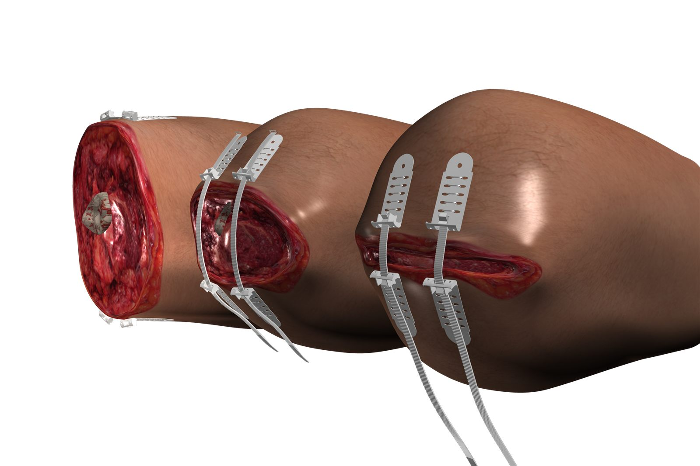

TopClosure® TRS offers non-invasive and invasive application options for wounds of any length, placing multiple units along the suture line in clinically appropriate directions, at the surgeon's discretion.
Effective for reversible closure of complex wounds involving substantial loss of skin and soft tissue. A quick, straightforward method to manage acute trauma wounds when traditional primary treatment is not immediately feasible, with secure closure even under tension.
After basic wound cleaning, temporary primary closure is easily achieved. On hospital arrival, a simple "zip-open" process allows re-evaluation and definitive treatment. Designed to replace conventional stitching kits in emergency preparedness storage.
A vital device for trauma management in combat, suitable for battalion first-aid stations and field hospitals, used by surgeons, physicians and military medics alike, within standard Combat Casualty Care (CCC) protocols.

TopClosure® TRS has played a crucial role in several wars and military operations, demonstrating its effectiveness in real-world scenarios.
Its significance was particularly evident during Operation "Protective Edge", where it was instrumental in treating soldiers with severe injuries and extensive soft tissue loss. The system allows rapid approximation of wound edges by stretching the skin in ways traditional sutures cannot achieve, a groundbreaking solution for wound management in critical situations.
Talk to us about emergency preparedness, military procurement and field training for TopClosure® TRS.